Sprzedam Mazdę 6 z 2015 - samochód użytkowany przeze mnie prywatnie. Jeździłem głównie w weekendy i na wakacje (trasa), 1-2 razy w tygodniu do pracy (miasto). Sprzedaję, ponieważ zmieniłem rodzaj pracy i mam auto firmowe.
Samochód jest bardzo dobrze wyposażony - właściwie max jaki był wtedy dostępny. Ma na prawdę super systemy bezpieczeństwa (aktywny tempomat, ostrzeganie o kolizji z automatycznym hamowaniem, BLIS z alarmem, asystent pasa, sygnalizacja ruchu poprzecznego z tyłu...) - najlepsze jakie były możliwe w tej klasie i roczniku. Ponadto: podgrzewane (również z tyłu) skórzane siedzenia, które są niesamowicie wygodne, szyberdach, łopatki do zmiany biegów, kamera cofania, itd.
W mieście Madzia paliła mi jakieś 11.5l/100km a na trasie schodzi poniżej 7l/100km. Auto jest dość lekkie, pewnie stąd niskie spalanie, a jednocześnie niezła dynamika i łatwość prowadzenia.
W razie pytań proszę pisać/dzwonić, chętnie odpowiem.
Do kwietnia 2022 roku serwisowana w ASO.
Stan techniczny:
• Bezwypadkowa, zadbana, garażowana
• Właściciel niepalący, w aucie nie jeździły małe dzieci ani zwierzęta
• Od kwietnia 2024 roku w moim posiadaniu
• Grudzień 2024: wymiana oleju, filtrów, serwis klimatyzacji
• Luty 2025: wymiana wahaczy przednich
• 2 komplety kół: - letnie 19" – opony jeszcze na 1 sezon - zimowe 17" – opony na 3 sezony.
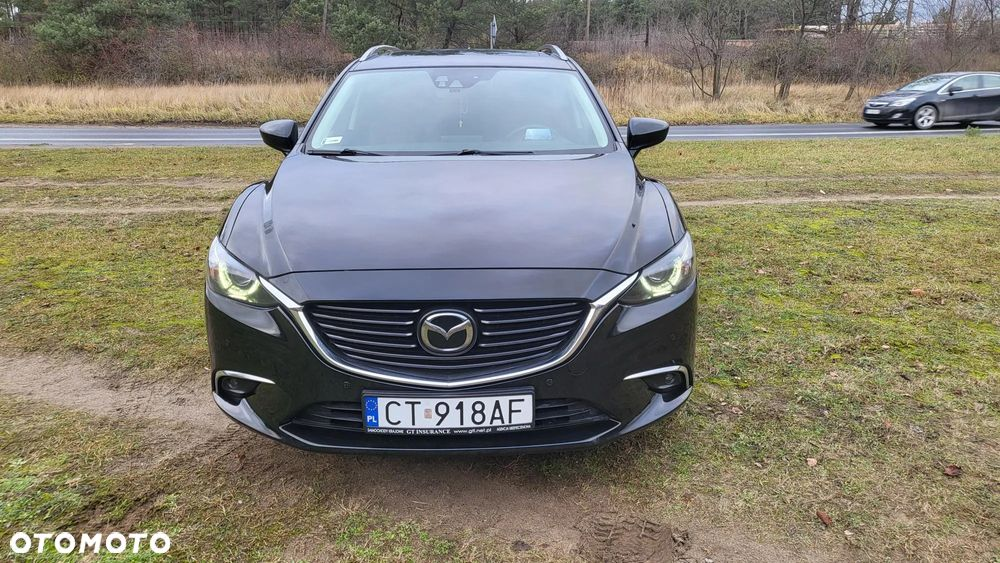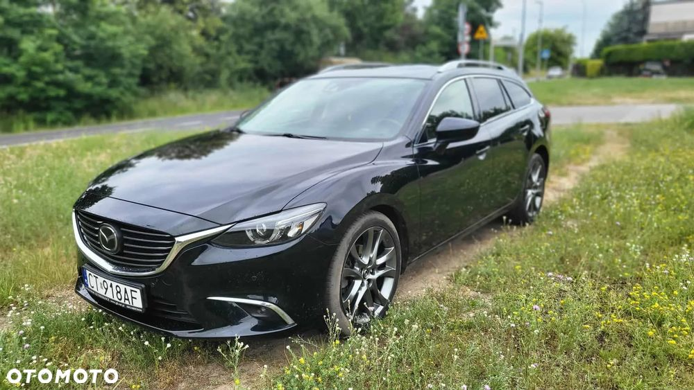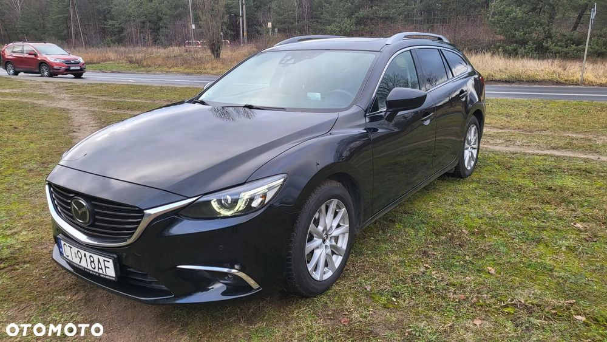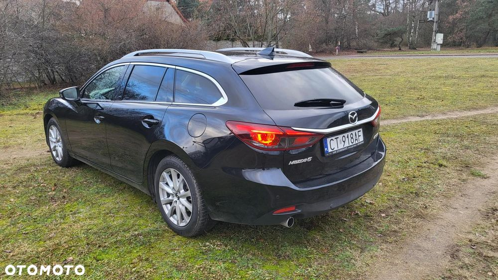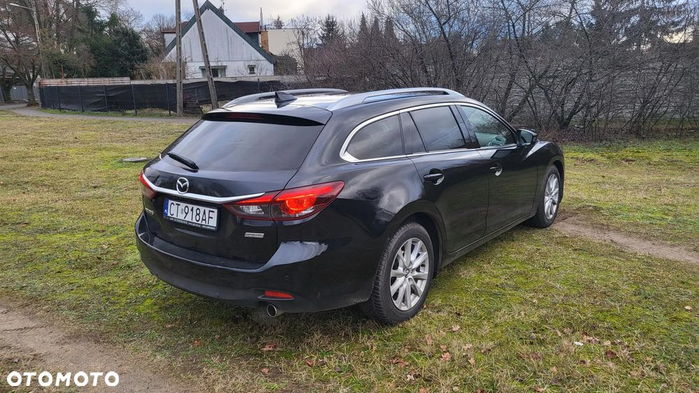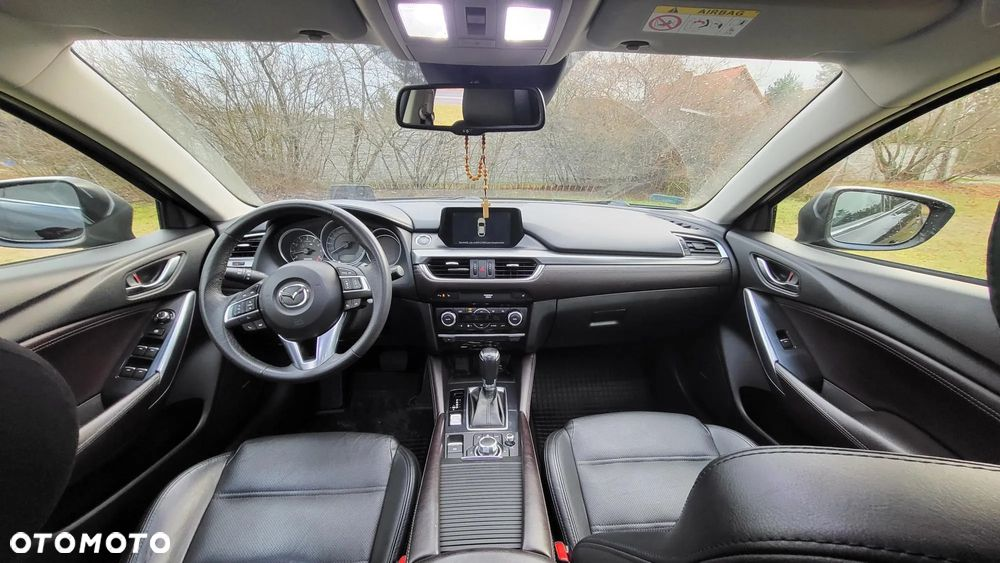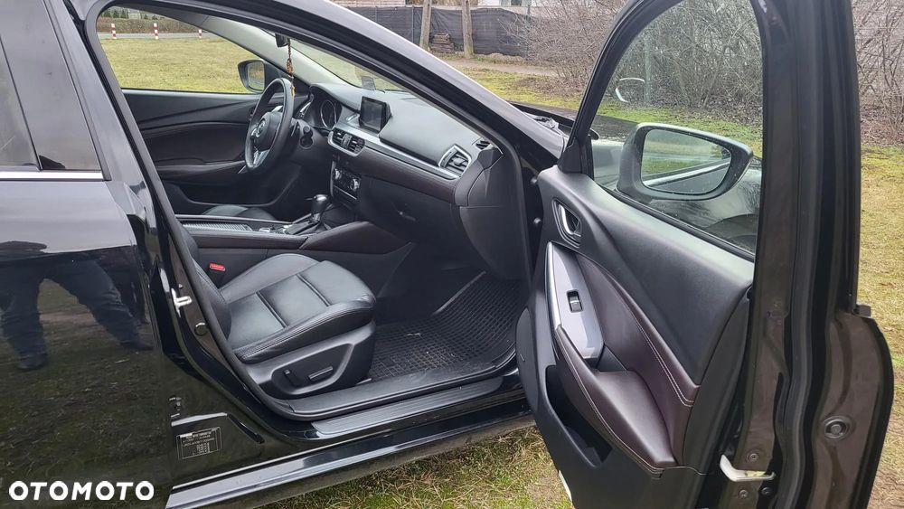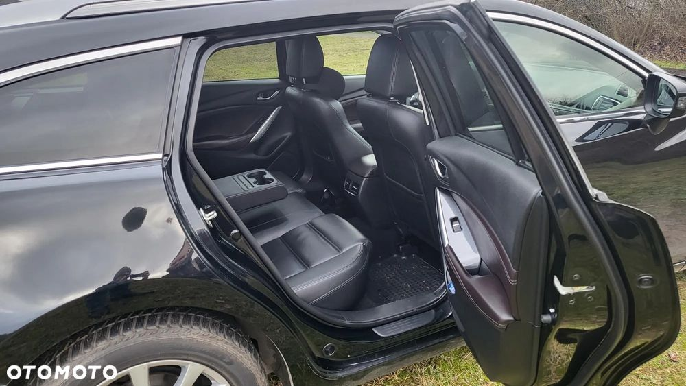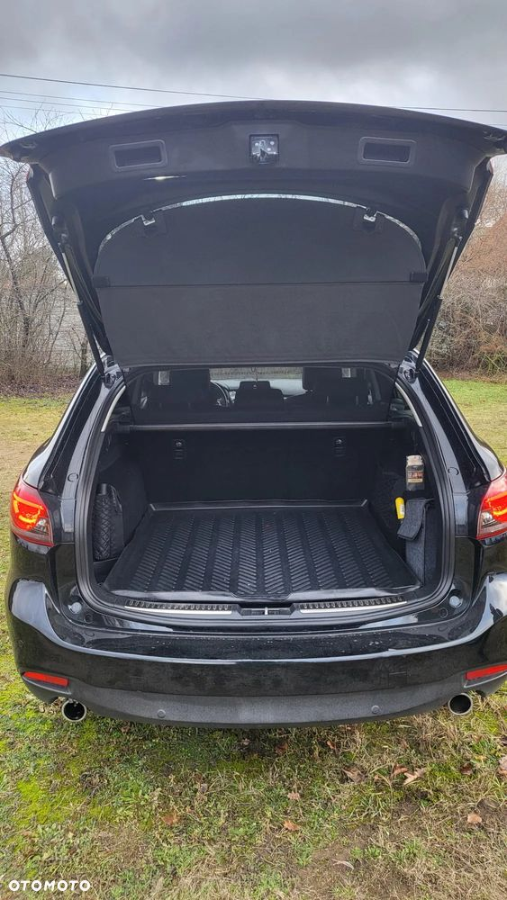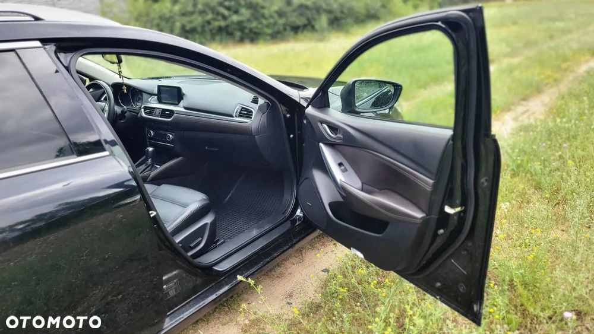 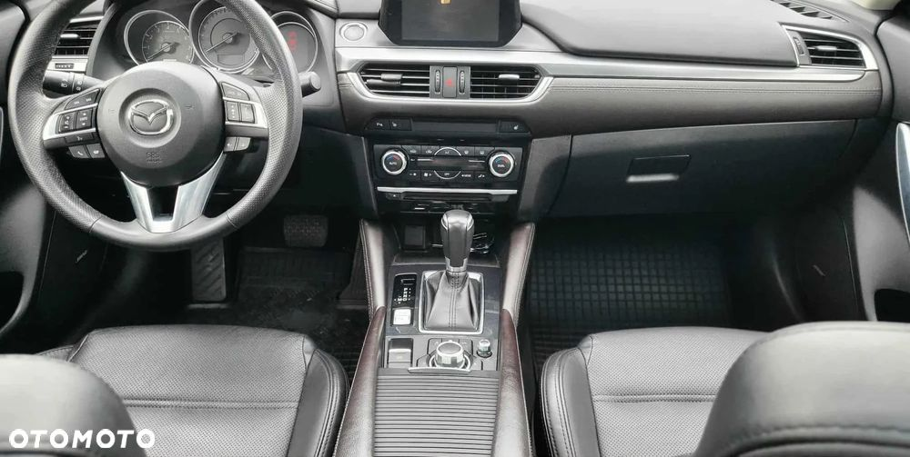
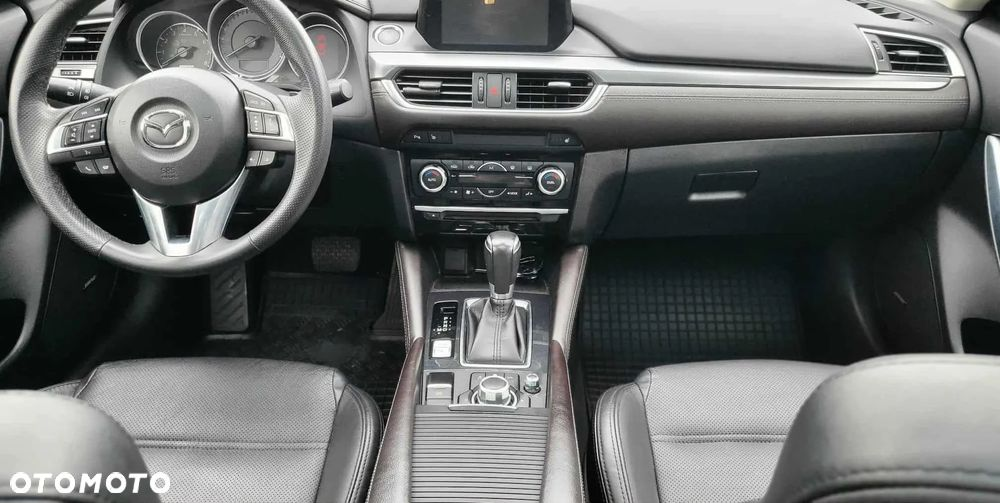